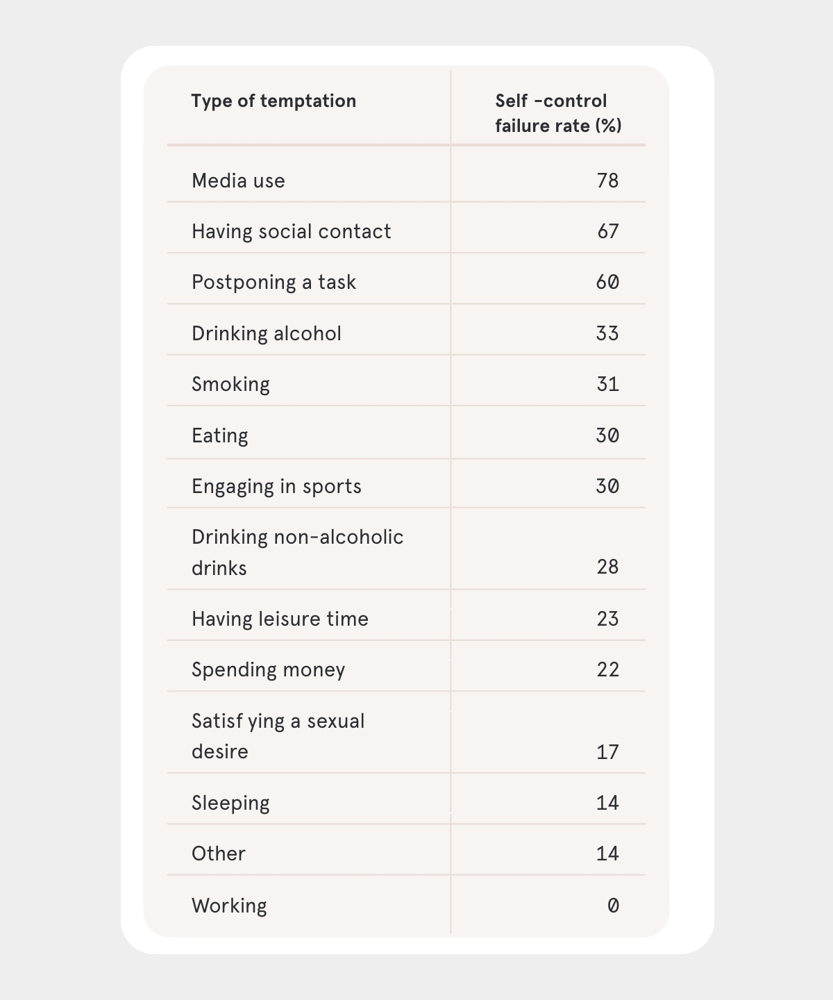
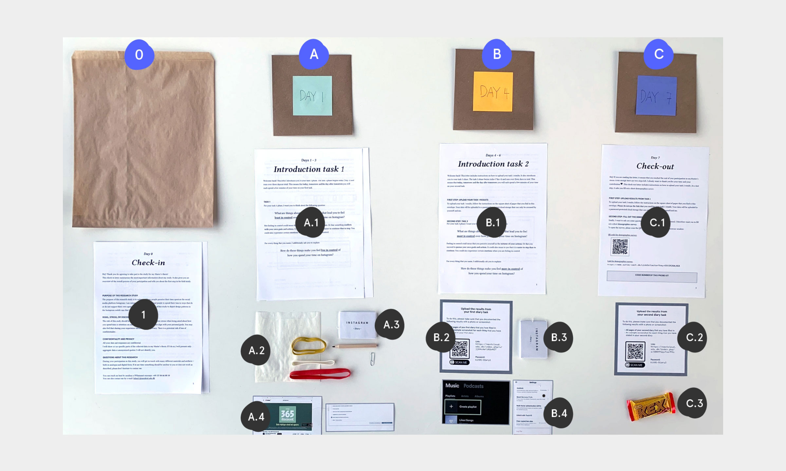
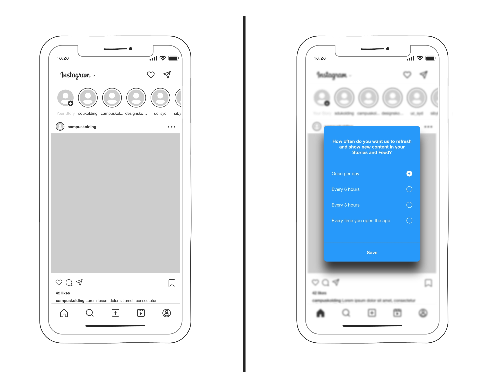

Designing to support user agency
In my Master Thesis, I explored and redesigned design mechanisms on Instagram for a greater sense of user agency.
Relevance: Capturing attention at all costs
Information technology is tightly woven through our contemporary lives, offering broad access to communication, knowledge, and entertainment. However, this wealth of information has made attention a scarce and therefore precious resource. This has resulted in a competition in which a very small number of exeptionally powerful organizations are continuously vying for people’s attention. Their technologies and products present ubiquitous temptations that frequently clash with other important activities in our lives.
Moreover, information and communication technologies (ICT) are designed in a way that makes them exceptionally hard to resist: While people’s failure rate is 31% for smoking and 28% for drinking alcohol, they fail to resist media use 78% of the time (see figure). This is because design mechanisms such as push notifications and autoplay create task interruptions and task-irrelevant thoughts that put an additional strain on the self-control capacity of media users.
This loss of agency that users experience over their technology use comes with detrimental effects on their well-being. Short-term effects such as feelings of fruststration and guilt often translate to more long-term decreases in cognitive well-being, including behavioral addiction and reduced life satisfaction. I therefore asked:
How can we design interfaces that give back control (i.e., user agency) toward the people who interact with these interfaces?

Research study design: moving from exploration to ideation
To answer this question, my research study design followed a design thinking process (see figure). I also used IDEO’s method cards to come up with suitable methods for the different phases of my research. Regarding the Discover phase, for example, I gleaned inspiration from the following three IDEO method cards: Secondary research, Try it yourself, and Cultural probes.

Analogue to the first Diamond of the design thinking process, I dedicated the first part of my research to exploring and understanding the problem. My research question was:
RQI: What existing design mechanisms in the Instagram mobile app influence sense of agency?
The inquiries in this phase included desk research, a probe study and its analysis through affinity diagramming. The results revealed distinct design features across Instagram’s design mechanisms that made participants feel less or more in control. I further identified 4 higher-level design patterns that describe how these design mechanisms undermine user sense of agency (see figure, visualized by four spherical shapes). These results informed my second research question:
RQII: What are alternative design mechanisms in the Instagram mobile app that might support sense of agency?
Analogue to the second Diamond of the design thinking process, the second part of my research process was concerned with finding solutions through ideating. For this, I developed four How might we (HMW) questions. Each question was based on one of the four design patterns for low agency. After generating a wide range of ideas, I chose to continue with one idea for each design challenge which resulted in a total of four experience prototypes. For potential inquries in the future (see figure, visualized by using lower contrast) I propose user testings to test whether the developed experience prototypes successfully support user sense of agency.
![A graphical representation of a research study design. It comprises two large rectangles with dotted borders. Outside the rectangle on the left is a text reading 'Phenomenon/problem' with an arrow pointing towards a text reading 'Aim'. Another arrow points from 'Aim' towards the inner space of the rectangle. Within this rectangle, a text in the top reads 'RQ1: What existing design mechanisms influence sense of agency?'. Below different research inquries and their dependencies to one another are visualized through various shapes and arrows. Reading from left to right, the different inquries are named: 'Desk research', 'Pilot probe study', 'Probe study' and 'Affinity diagram'. The shapes visualizing 'Affinity diagram' pass into the second large rectangle on the right side. Within this rectangle, a text in the top reads 'RQ2: What are alternative design mechanisms that might support sense of agency?'. Analogue to the first large rectangle, different research inquries and their dependencies to one another and to the inquries of the first large rectangle are visualized. Reading from left to right, the different inquries are named: 'Experience prototypes' and 'User testing'. Unlike the other inquries, 'User testing' is grayed out.](img/1-researchstudydesign.jpg)
Discover: From desk research to intervention
I began my project with desk research, exploring the following three research areas: dark patterns of interaction design, philosophy of technology and previous work on sense of agency for well-being. The results contributed an essential component of groundwork to my research as well as informed the further course of my research process. For example, there is a need for research to identify and examine design patterns that manipulate users into spending time and attention in an app against their best interests (so-called attention capture dark patterns). 2
I then designed and conducted my own intervention: a probe study with a total of 12 participants. My aim was to collect user experiences and form an empathic understanding of how existing design mechanisms in the Instagram mobile app influence user sense of agency. Each probe kit included 2 assignments and 2 corresponding diaries (see figure). The first assignment asked participants to name and explain things that made them feel least in control (LC) of how they spend their time on Instagram. Thereafter, the second assignment asked them to name and explain things that made them feel most in control (MC).
Besides the diary, each participant received a number of other materials (see figure). For example, the envelope for study day 1 contained straps to attach the diary to the back of a smartphone (see figure, A.2)

Lesson learned
Probe studies are a lot of work, instructions must be well thought-through Besides the diary, each participant received a number of other materials (see figure). For example, the envelope for study day 1 contained straps to attach the diary to the back of a smartphone (see figure, A.2)
Define: Bringing all the data together
DEFINE: Affinity mapping


- PoV:
- Instagram users need to be more in control over how they spend their time in the Instagram app because current design mechanisms undermine their sense of agency, thereby deteriorating user well-being. This happens in four ways: by imposing unwanted information on users, by showing highly personalized content, by creating fear of missing out, and by determining the ease of an interaction.
- 4 types of design patterns for least control
- 3 types of design patterns for most control
Lesson learned: Analyzing on your own is hard, first affinity diagram was crap
This is a blockquote this one too?
yip
but this one as well?
Develop: Designing to support user agency
DEVELOP - 4 HMW questions / design challenges - 4 prototypes


Setback: Ideating on your own is hard, (no time for testing)
My Master Thesis sheds light on the exploitative tactics with which online platforms and digital technologies systematically undermine user’s self control. This loss of agency that users experience over their technology use comes with detrimental effects on their well-being.
Based on these findings, I used experience prototyping to create 4 prototypes. These redesigs support user sense of agency
Taking one of most widespread social media platforms worldwide, my Master thesis explores and redesigns how design mechanisms influence user agency on Instagram.
such as push notifications and autoplay
Inspired by this, I stumbled upon the
Lessons learned: TIME, not testing Setbacks: probing is hell of work, ideating on your own is hard
Solution link
Es gibt zwei Unterarten, A. h. hornemanni aus Grönland und den kanadischen Nachbarinseln sowie A. h. exilipes aus Nordamerika und Eurasien. Die grönländische Unterart ist größer und heller, manchmal überwiegend weiß. In Europa brütet der Polar-Birkenzeisig nur im nördlichsten Skandinavien. Im Winter hält er sich im gesamten Skandinavien und im Baltikum auf, Umherstreifende gelangen bis Island, Großbritannien und Mitteleuropa.
Note that there are five types of callouts, including: note, warning, important, tip, and caution.
hallo hallo
Footnotes
Delaney, L., & Lades, L. K. (2017). Present Bias and Everyday Self-Control Failures: A Day Reconstruction Study. Journal of Behavioral Decision Making, 30(5), 1157–1167. https://doi.org/10.1002/bdm.2031 ↩︎
Lukoff, K. (2022). Designing to Support Sense of Agency for Time Spent on Digital Interfaces [PhD Thesis]. University of Washington. ↩︎